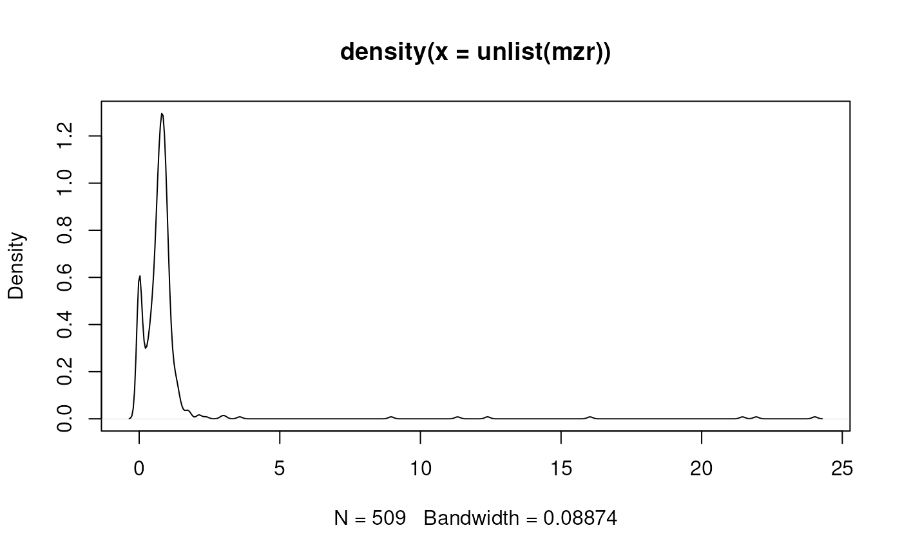

R/methods-MSnExp.R, R/methods-Spectrum.R
estimateMzResolution.RdestimateMzResolution estimates the m/z resolution of a profile-mode
Spectrum (or of all spectra in an MSnExp or OnDiskMSnExp object.
The m/z resolution is defined as the most frequent difference between a
spectrum's m/z values.
# S4 method for MSnExp
estimateMzResolution(object, ...)
# S4 method for Spectrum
estimateMzResolution(object, ...)either a Spectrum, MSnExp or OnDiskMSnExp object.
currently not used.
numeric(1) with the m/z resolution. If called on a MSnExp or
OnDiskMSnExp a list of m/z resolutions are returned (one for
each spectrum).
This assumes the data to be in profile mode and does not return meaningful results for centroided data.
The estimated m/z resolution depends on the number of ions detected in a spectrum, as some instrument don't measure (or report) signal if below a certain threshold.
## Load a profile mode example file
library(BiocParallel)
register(SerialParam())
library(msdata)
f <- proteomics(full.names = TRUE,
pattern = "TMT_Erwinia_1uLSike_Top10HCD_isol2_45stepped_60min_01.mzML.gz")
od <- readMSData(f, mode = "onDisk")
## Estimate the m/z resolution on the 3rd spectrum.
estimateMzResolution(od[[3]])
#> [1] -0.03353908
## Estimate the m/z resolution for each spectrum
mzr <- estimateMzResolution(od)
## plot the distribution of estimated m/z resolutions. The bimodal
## distribution represents the m/z resolution of the MS1 (first peak) and
## MS2 spectra (second peak).
plot(density(unlist(mzr)))
